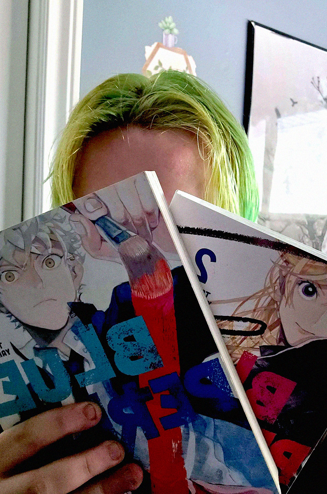

Well, I just spent the last week self-destructing. Again. I fucking skipped school! Why would I do that?
Of course, I know why I would do something like that. Anything to push Vega and Finn away. And in normal circumstances, shit like that would work. But these two… seem to genuinely care about me.
Vega and Cedar came to my work looking for me. They came to tell me that they were there to support me in whatever way I needed while I went through everything I was struggling with. These two idiots actually care about me! (╥﹏╥) I’m not crying, you’re crying!
Honestly, Vega really snapped some sense into me. This goddamn crashout was lowkey embarrassing. I barely knew this man and I’m losing my mind over him? Seriously? What a joke. But it was seriously a reality check for me. All of this, including having my friends come and find me.
I am capable of friendship. Hell, maybe I’m even deserving of it, which is making me question my whole relationship with Benji. Anyways! Yeah, I’m capable of making friends and that people can fight for me. For the first time in my life, Vega and Finn proved that to me. But what this did prove is that I need to give up on love. No one would ever want to spend their life with me, I’m a fucking wreck.
But my friends? They are important to me. I’ll try not to push them away, even if that’s hard for me. Though I do know one thing. If I do try and push them away, they’ll always push back and be there to protect me at the end of the day.
Cedar